Basketball – StephLuca
BBall 3D + Realism 3D · clip StephLuca · Outputs made Oct 31, 2026
Source footage is NBA broadcast video; all rights belong to the NBA and its broadcast partners. Shown here only as reference for a non-commercial research demo.
Source vs recreation
Interactive 3D viewer
More renders
QA contact sheets (13)
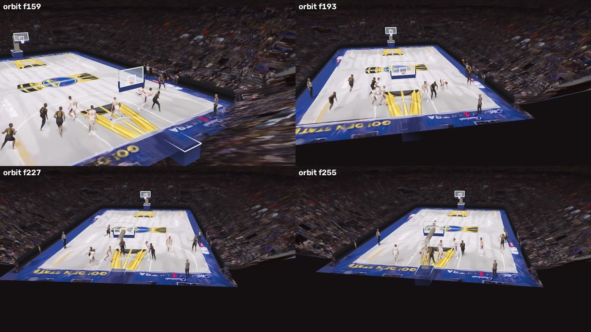
StephLuca_orbit_behind_stands.jpg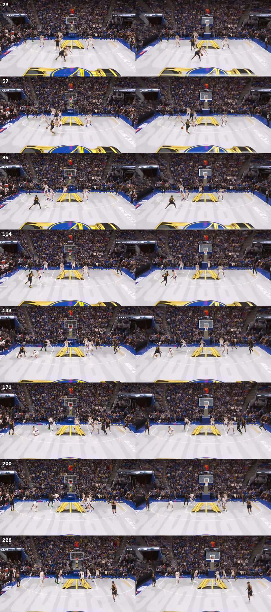
StephLuca_sheet_compare.jpg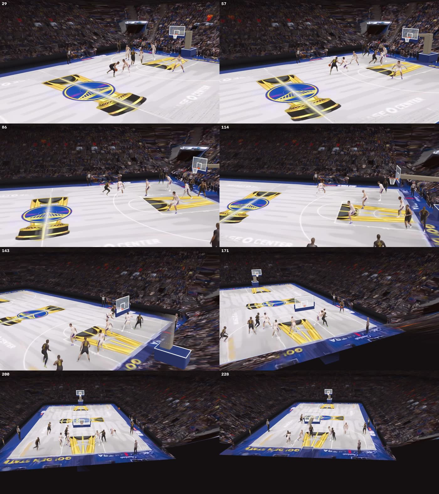
StephLuca_sheet_orbit.jpg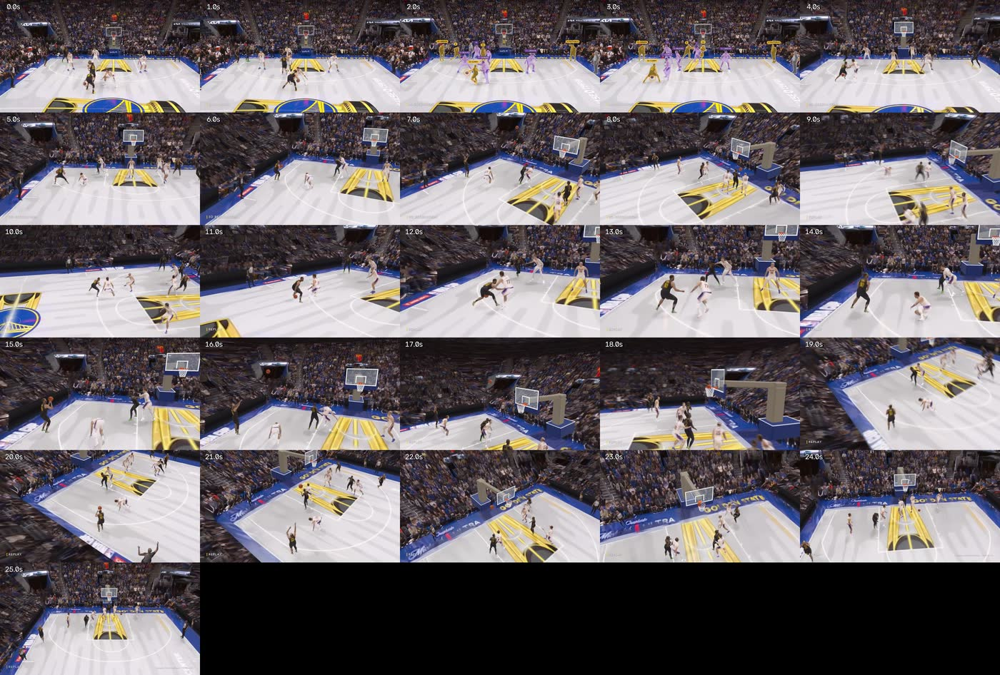
StephLuca_twitter_sheet.jpg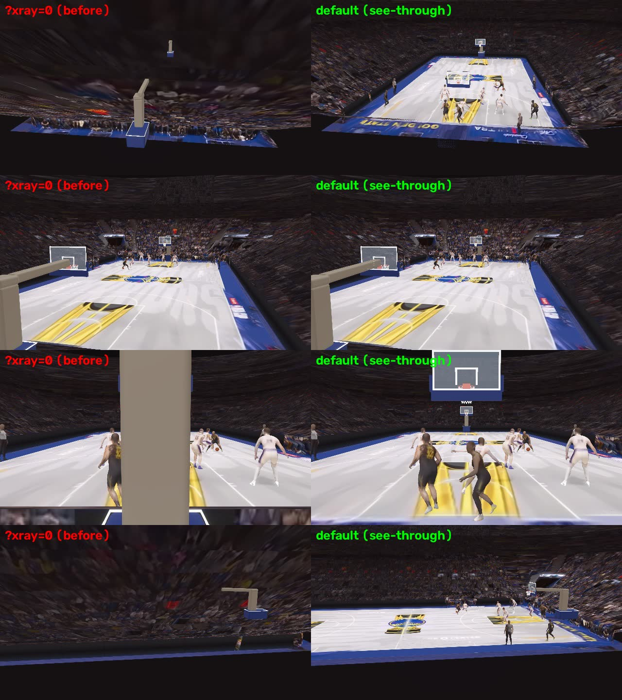
StephLuca_xray_beforeafter.jpg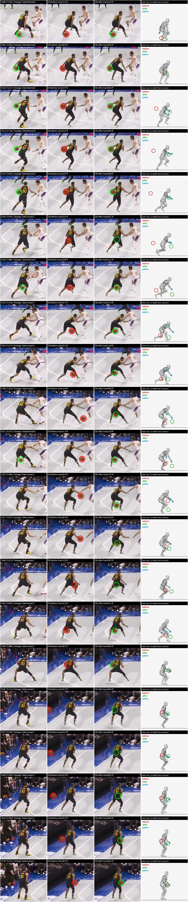
ballfix_contact_sheet.jpg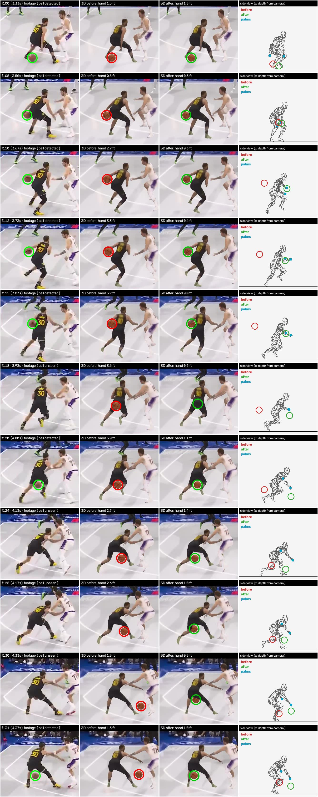
ballfix_contact_sheet_a.jpg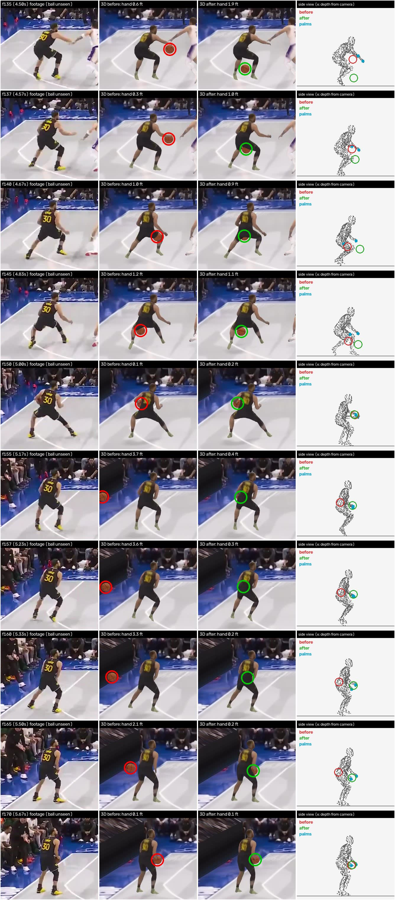
ballfix_contact_sheet_b.jpg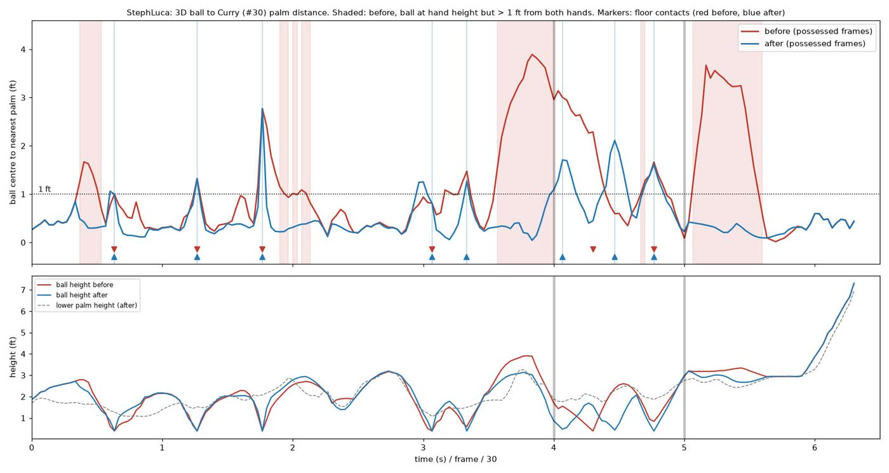
ballfix_hand_distance.jpg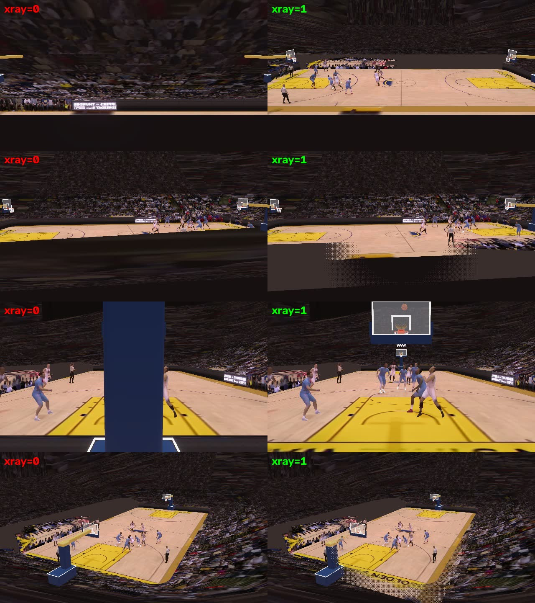
xray_beforeafter_Steph_scratch.jpg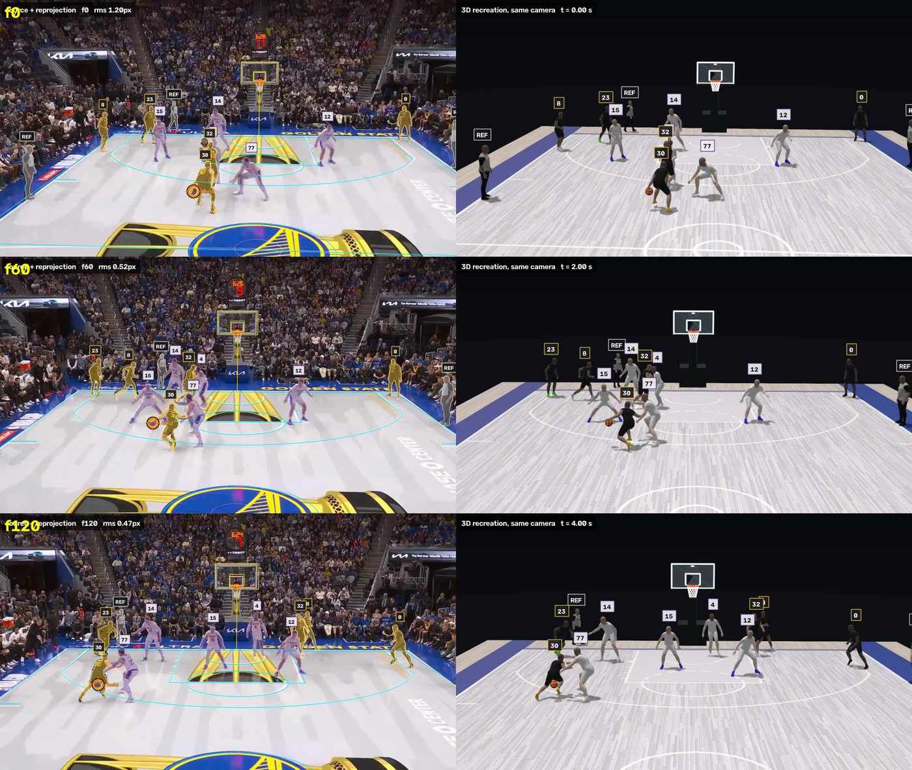
compare_sheet_a.jpg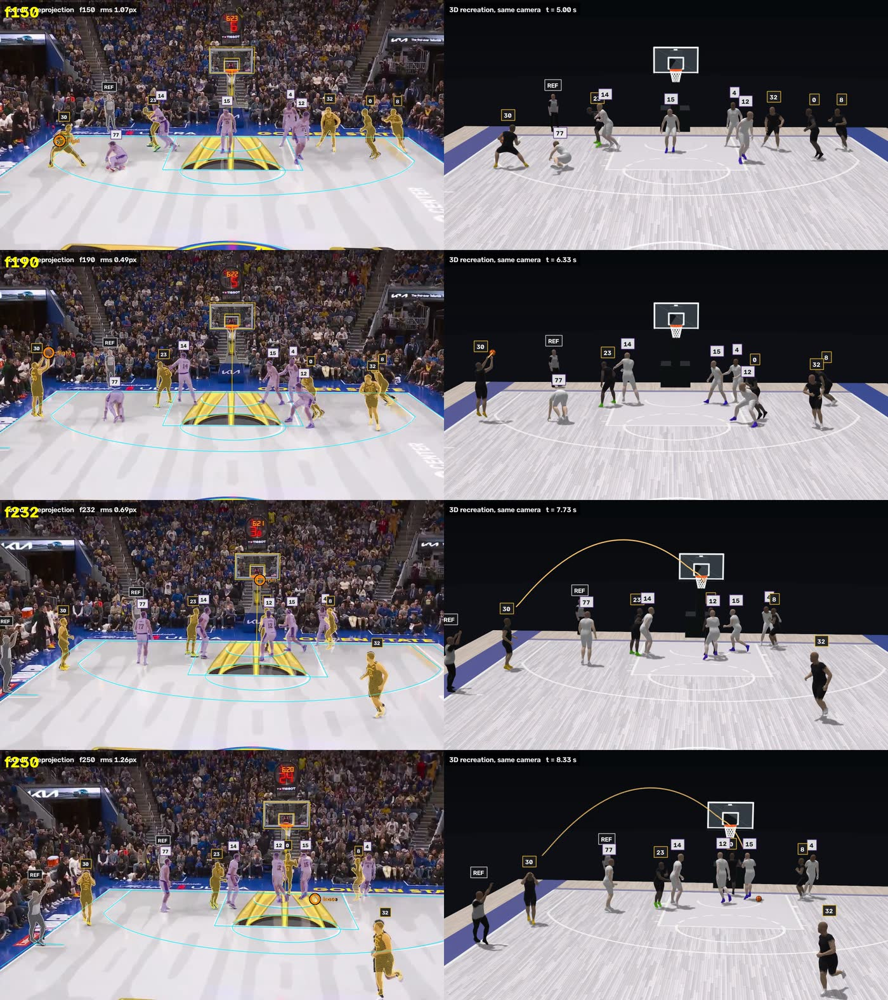
compare_sheet_b.jpg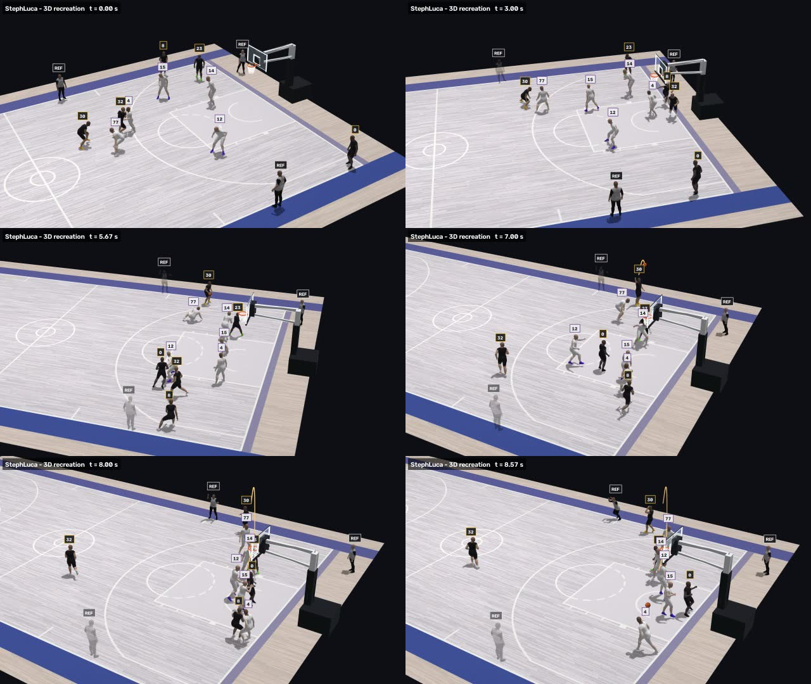
orbit3d_sheet.jpgOther files in the output folder (31, not published)
StephLuca/StephLuca_qc.json | QC / metrics JSON | 44 KB | Oct 31, 2026 14:47 |
StephLuca/StephLuca_real_fps.json | QC / metrics JSON | 3 KB | Oct 31, 2026 13:45 |
StephLuca/StephLuca_real_metrics.json | QC / metrics JSON | 15 KB | Oct 31, 2026 14:52 |
StephLuca/assets/players/0.jpg | Viewer bake asset (embedded in viewer, not copied) | 184 KB | Oct 31, 2026 14:49 |
StephLuca/assets/players/1.jpg | Viewer bake asset (embedded in viewer, not copied) | 171 KB | Oct 31, 2026 14:49 |
StephLuca/assets/players/10.jpg | Viewer bake asset (embedded in viewer, not copied) | 118 KB | Oct 31, 2026 14:49 |
StephLuca/assets/players/11.jpg | Viewer bake asset (embedded in viewer, not copied) | 121 KB | Oct 31, 2026 14:49 |
StephLuca/assets/players/12.jpg | Viewer bake asset (embedded in viewer, not copied) | 121 KB | Oct 31, 2026 14:49 |
StephLuca/assets/players/2.jpg | Viewer bake asset (embedded in viewer, not copied) | 170 KB | Oct 31, 2026 14:49 |
StephLuca/assets/players/3.jpg | Viewer bake asset (embedded in viewer, not copied) | 174 KB | Oct 31, 2026 14:49 |
StephLuca/assets/players/4.jpg | Viewer bake asset (embedded in viewer, not copied) | 160 KB | Oct 31, 2026 14:49 |
StephLuca/assets/players/5.jpg | Viewer bake asset (embedded in viewer, not copied) | 172 KB | Oct 31, 2026 14:49 |
StephLuca/assets/players/6.jpg | Viewer bake asset (embedded in viewer, not copied) | 147 KB | Oct 31, 2026 14:49 |
StephLuca/assets/players/7.jpg | Viewer bake asset (embedded in viewer, not copied) | 144 KB | Oct 31, 2026 14:49 |
StephLuca/assets/players/8.jpg | Viewer bake asset (embedded in viewer, not copied) | 178 KB | Oct 31, 2026 14:49 |
StephLuca/assets/players/9.jpg | Viewer bake asset (embedded in viewer, not copied) | 151 KB | Oct 31, 2026 14:49 |
StephLuca/StephLuca_play.pkl | Pickled PlayData | 99.1 MB | Oct 31, 2026 14:41 |
StephLuca/qa/ballfix_hand_distance.json | QA debug file | 658 B | Oct 31, 2026 14:52 |
StephLuca/assets/body.bin | Viewer bake asset (embedded in viewer, not copied) | 11.1 MB | Oct 31, 2026 14:48 |
StephLuca/assets/body.json | Viewer bake asset (embedded in viewer, not copied) | 142 KB | Oct 31, 2026 14:48 |
StephLuca/assets/env/floor.jpg | Viewer bake asset (embedded in viewer, not copied) | 437 KB | Oct 31, 2026 14:50 |
StephLuca/assets/env/floor.json | Viewer bake asset (embedded in viewer, not copied) | 1 KB | Oct 31, 2026 14:51 |
StephLuca/assets/env/light.json | Viewer bake asset (embedded in viewer, not copied) | 722 B | Oct 31, 2026 14:51 |
StephLuca/assets/mesh.bin | Viewer bake asset (embedded in viewer, not copied) | 52 KB | Oct 31, 2026 14:47 |
StephLuca/assets/players/meta.json | Viewer bake asset (embedded in viewer, not copied) | 6 KB | Oct 31, 2026 14:50 |
StephLuca/assets/players/parts.bin | Viewer bake asset (embedded in viewer, not copied) | 2 KB | Oct 31, 2026 14:49 |
StephLuca/assets/env/preview_0.jpg | Viewer bake asset (embedded in viewer, not copied) | 1.0 MB | Oct 31, 2026 14:51 |
StephLuca/assets/env/preview_1.jpg | Viewer bake asset (embedded in viewer, not copied) | 1.0 MB | Oct 31, 2026 14:51 |
StephLuca/assets/scene.json | Viewer bake asset (embedded in viewer, not copied) | 98 KB | Oct 31, 2026 14:48 |
StephLuca/assets/env/stands.jpg | Viewer bake asset (embedded in viewer, not copied) | 1.7 MB | Oct 31, 2026 14:51 |
StephLuca/assets/env/stands.json | Viewer bake asset (embedded in viewer, not copied) | 58 KB | Oct 31, 2026 14:51 |